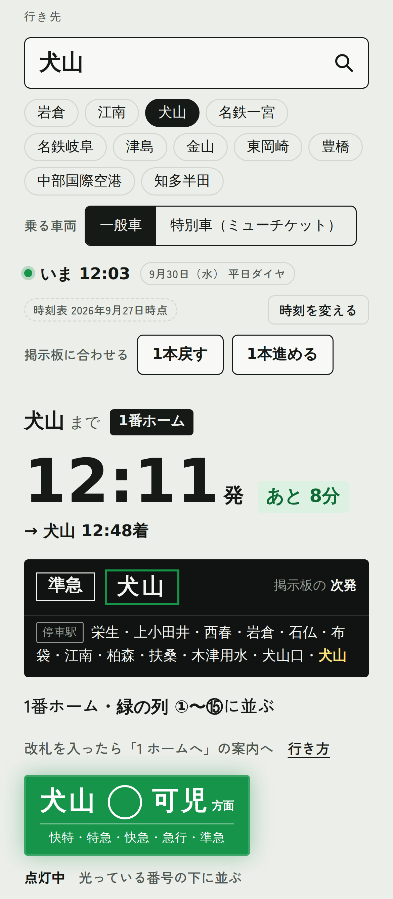

ナゴナラ！
名鉄名古屋駅どこに並ぶ？
1 / 6
名鉄名古屋駅の1番ホーム、
どこに
並
なら
ぶ？
迷わん並び方、まとめたでね。
メイが
教えたるでね！
めくってね →
非公式
nagonara.github.io
ナゴナラ！
名鉄名古屋駅どこに並ぶ？
2 / 6
なんで迷うの？
1番ホームからは、
3つの方面
の
電車が次々に出るから。
犬山線
岩倉・犬山・新鵜沼 方面
名古屋本線
一宮・岐阜 方面
津島線
津島・弥富 方面
しかも、行き先と電車の種類で
並ぶ場所がちがう！
ようけ来るもんで、
迷って当たり前だがね
非公式
nagonara.github.io
ナゴナラ！
名鉄名古屋駅どこに並ぶ？
3 / 6
答えは、天井の
行灯
あんどん
の
色
！
床の線も同じ色。自分の色の列に並ぶだけ。
犬山
可児
方面
緑
犬山線の 準急・急行・特急・快特
西春
岩倉
方面
水色
犬山線の 普通
津島
弥富
方面
紫
津島線（全部の種類）
一宮
岐阜
方面
濃い青
名古屋本線の 準急・急行・特急・快特
須ケ口
国府宮
方面
黄色
名古屋本線の 普通
※1番ホーム（犬山・岐阜・津島方面）の場合。4番ホーム（豊橋・空港方面）は4色です。
非公式
nagonara.github.io
ナゴナラ！
名鉄名古屋駅どこに並ぶ？
4 / 6
光っとる
番号
の
下に並ぶ！
行灯の丸の中の数字は、乗る位置の番号。
電車が止まる番号だけ光るよ。
犬山
13
可児
方面
点滅
次に来る電車の列
犬山
13
可児
方面
点灯
その色の次の電車が止まる
犬山
13
可児
方面
消灯
ここには止まらんよ
電車の両数（2〜8両）で、
光る番号の範囲が変わるで注意！
非公式
nagonara.github.io
ナゴナラ！
名鉄名古屋駅どこに並ぶ？
5 / 6
行き先
を入れるだけ。
「ナゴナラ！」なら、ぜんぶ教えてくれるよ。

1
行き先を入れる
ひらがなでもOK
2
乗る電車と
並ぶ色・番号が出る
何分後に出るか、何時に着くかも
3
その行灯の下へ！
乗り換えの駅も案内するよ
日本語 / English 対応
非公式
nagonara.github.io
ナゴナラ！
名鉄名古屋駅どこに並ぶ？
6 / 6
保存
して、
駅で見返してちょ！
わからんかったら、
また聞いてちょ〜！
プロフィールのリンクから
ナゴナラ！
nagonara.github.io
フォローすると、
行き先別の並び方も届くよ
※非公式の案内です。最終確認は駅の掲示板・放送で。
非公式
nagonara.github.io